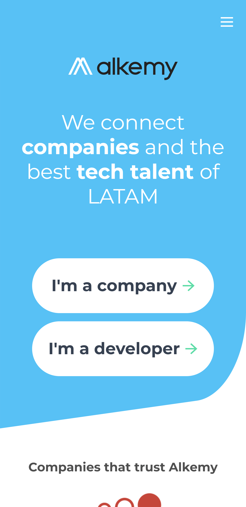
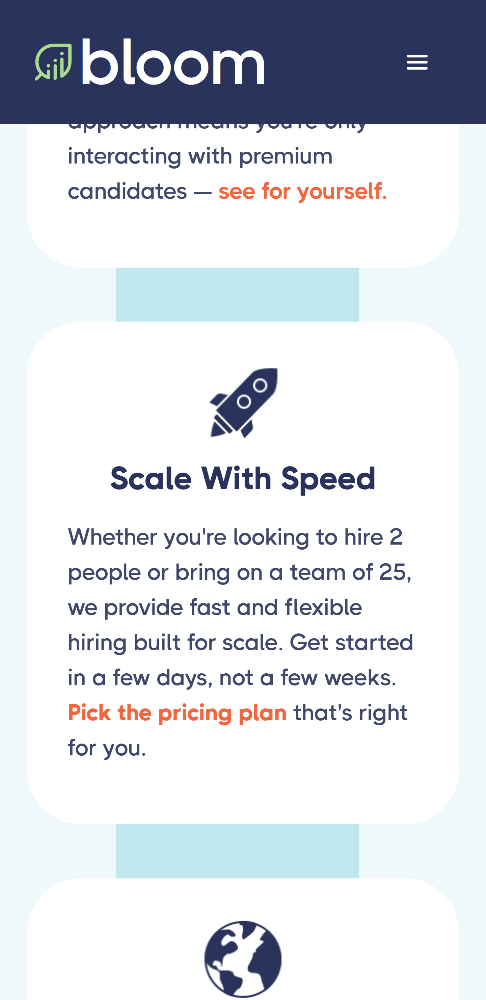
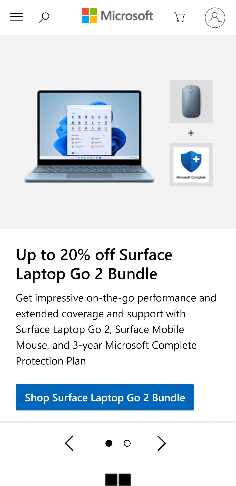

Design Principles Document
Hick's Law
Alkemyalkemy.org 
The Alkemy site provides a good example of Hick's Law on its homepage. When the user enters, they have 3 options, the menu, or indicate if they are a developer or a company. It doesn't overwhelm us with information, it just tells us the purpose of the site and makes it easy for us to move on with big buttons pointing the way. It makes it very clear and intuitive, the communication is perfectly visual, not written. This makes it easy for the user to make a quick decision and encourages them to move on.
P.A.R.C. Repetition
Bloomhirebloom.co 
Bloom's site takes great advantage of the repetition device. He is consistent in the use of color and font to present different sections, which gives consistency to the message he wants to present. The site emphasizes the confidence of your work by presenting different advantages in the same way and helps to process them similarly by providing confidence.
Visual Hierarchy
Microsoftmicrosoft.com 
The official Microsoft site may be displayed differently in each region, so I use the US-English version. The visual hierarchy can be seen as it is applied to each product or post. Each image is accompanied by a quick slideshow in big, bold fonts, then a more detailed description in a smaller font, simpler text, then an accompanying button that allows the user to execute the necessary action based on the item being viewed. The important thing is that the hierarchy is not necessarily presented from top to bottom, but that it fits the design of the site.